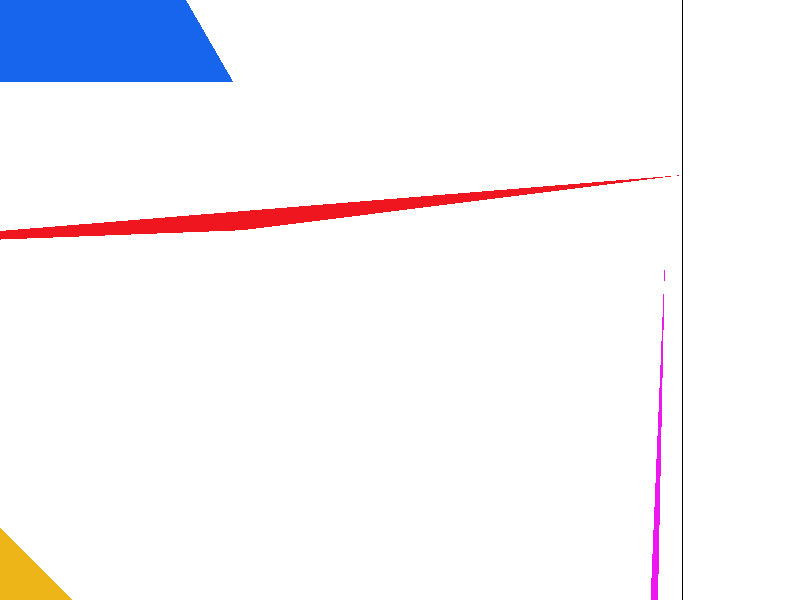
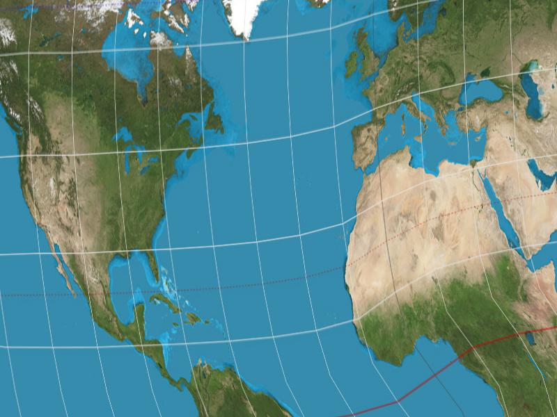
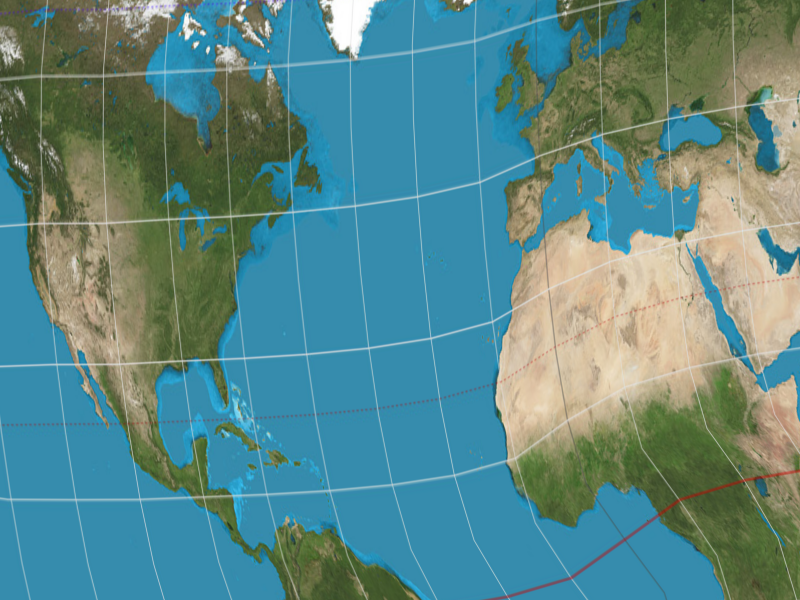
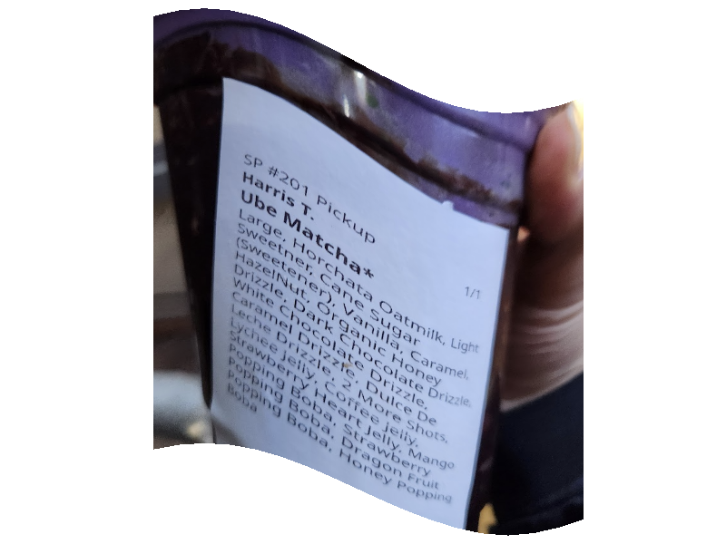

CS184/284A Spring 2025 Homework 1 Write-Up
Names: Kenny Wang, Harris Thai
Link to webpage: cs184.eecs.berkeley.edu/sp25
Link to GitHub repository: ABGs
Overview
Give a high-level overview of what you implemented in this homework. Think about what you've built as a whole. Share your thoughts on what interesting things you've learned from completing the homework.Task 1: Drawing Single-Color Triangles
We rasterize triangles by iterating through the bounding box of the triangle and filling it if it is inside the triangle as determined by the line equation tests. The bounding box is given by the smallest and largest x and y coordinates among the triangle’s vertices. For a point to be inside, evaluating the line equations must either result in values all less than or equal to 0, or they are all greater than or equal to 0. Our algorithm is no worse than one that checks each sample within the bounding box of the triangle because it literally checks each sample within the bounding box of the triangle.Task 2: Antialiasing by Supersampling
To supersample, we divide each pixel into sample_rate subpixels and rasterize them. Therefore, we populate the sample buffer with sample_rate values per entry in the frame buffer. We resolve to framebuffer by taking the average of the sample_rate subpixels corresponding to each pixel. Supersampling is useful because taking more samples and then downsampling means that the image is smoother and there are less jaggies. To support supersampling, we had to modify fill_pixel to populate sample_rate subpixels in sample buffer for every pixel so that resolving to framebuffer would still work for rasterize_point and rasterize_line. The smoothing that supersampling provides helps us antialias the jagged edges on our triangles.|

|
|
|
Task 3: Transforms
Task 4: Barycentric coordinates

Task 5: "Pixel sampling" for texture mapping
Pixel sampling involves picking a point from one image and using it as the color for another. In other words, it is the process of mapping (u, v) texture coordinates to (x, y) image coordinates to apply a texture to an image. We convert (x, y) coordinates to (u, v) coordinates by first converting to barycentric coordinates. We then use the barycentric coordinate coefficients (alpha, beta, gamma) and apply them to the (u, v) coordinates at the vertices of the triangle to get the (u, v) point. We obtain the color at that point by scaling up u and v by width and height, respectively, and sampling on the texture with that scaled point. The nearest pixel sampling method involves selecting the color at the pixel closest to the specified (u, v) point and the linear pixel sampling method involves finding the colors of the 4 nearest pixels to the point and interpolating them. Compared to the nearest pixel sampling method, the bilinear pixel sampling method is noticeably smoother and has less aliasing. Since choosing the nearest pixel means that some pixels are entirely skipped, so bilinearly interpolating does a better job of capturing small details with minimal aliasing.|
|
|
|

|

|
Task 6: "Level Sampling" with mipmaps for texture mapping
Level sampling is pixel sampling from textures of different sizes, depending on the size of the detail. We determine the size of a feature by calculating the (u, v) values at (x, y), (x + 1, y), and (x, y + 1) and subtracting them to estimate the derivative of (u, v) in the x and y directions. Based on the log magnitude of these derivatives, we calculate a float level value. For the nearest level sampling method, we simply rounded to the nearest level and clipped it, but for the linear level sampling method, we got the color at the adjacent levels of the mipmap and linearly interpolated between them. Increasing samples per pixel, or supersampling, is effective at antialiasing by smoothing out jagged edges, but the sample buffer requires sample_rate times more memory and processing this data makes rendering many times slower. Pixel sampling is useful for applying textures, but does not necessarily help with antialiasing. It also does not use much memory, just enough for the 0th layer texture, and is not much slower than normal rendering unless it is using the linear pixel sampling method, which causes a noticeable slowdown. Level sampling applies textures and provides a level of antialiasing, while using a moderate amount of memory for the mipmap levels and significant compute for rendering, especially if using the linear level sampling method.

|

|
|
|
|